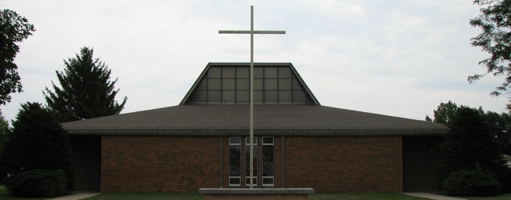

The Cambridge, Galva, and Woodhull communities live and proclaim the Gospel message of Jesus in word and action. We invite and welcome all people lovingly into our faith community inspiring a spirit of love, joy and wisdom. We are servants on a journey of faith, spreading gifts of healing and forgiveness that flow from God. Our parishes encourage all to become Disciples of Christ, embracing the presence of the Holy Spirit. We share our gifts, talents and other blessings in serving God and one another.